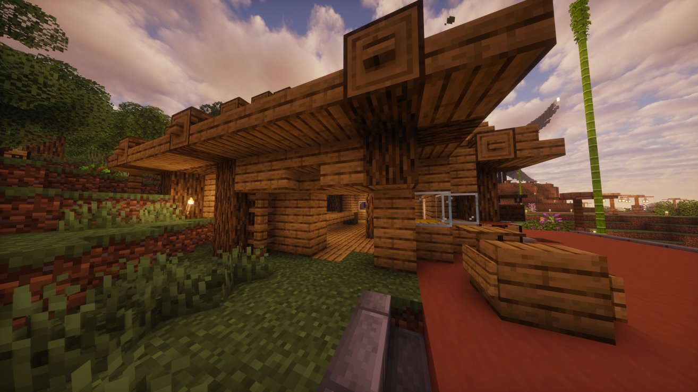
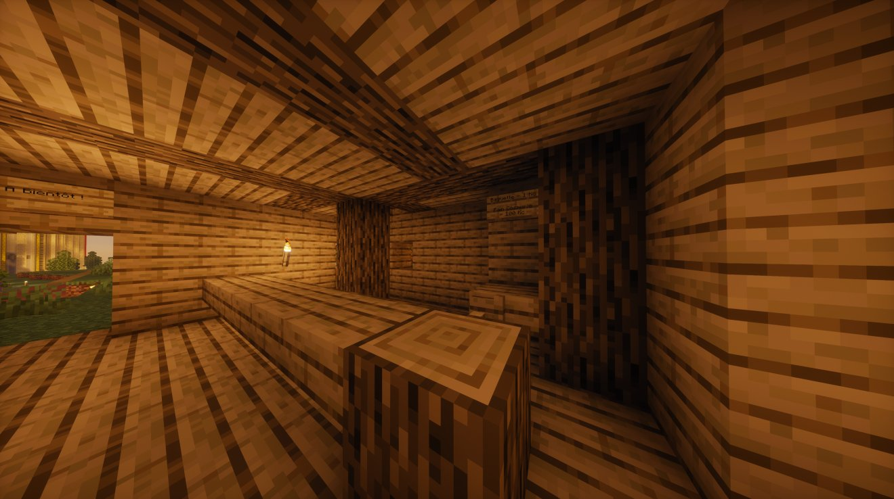

Braquage chez Michel : sa boutique dévalisée pendant son départ en vacances
La boutique de pain de Michel a été braquée alors que son propriétaire était parti en vacances. Profitant de son absence, des criminels ont frappé en toute discrétion, passant par derrière pour pénétrer dans l'établissement.

La boutique de pain de Michel a été braquée alors que son propriétaire était parti en vacances. Profitant de son absence, des criminels ont frappé en toute discrétion, passant par derrière pour pénétrer dans l'établissement avant de le dévaliser.
Une attaque opportuniste
Le choix du moment ne doit rien au hasard : les malfaiteurs ont clairement profité du départ en vacances de Michel pour agir sans opposition directe. En s'introduisant par l'arrière, ils ont pu vider la boutique rapidement et repartir avant que la situation ne soit maîtrisée.

Un coup dur pour le commerce local
Ce braquage laisse derrière lui une boutique fragilisée et un commerçant victime d'un vol organisé pendant son absence. La méthode employée montre une forme de préparation et une connaissance des lieux, ce qui rend l'affaire encore plus préoccupante.
Le Karmine Déchaîné condamne fermement cet acte et appelle chacun à rester vigilant. Même un simple commerce de pain peut devenir la cible de criminels lorsqu'il est laissé sans surveillance.
"Quand les vacances commencent pour l'un, les voleurs y voient parfois une occasion."
— La Rédaction
Avez-vous vu quelque chose ?
Si vous étiez dans les environs de la boutique de Michel au moment des faits, si vous avez aperçu des individus suspects rôder autour de l'établissement ou passer par l'arrière, le Karmine Déchaîné vous invite à vous manifester. Tout témoignage, même partiel, peut permettre d'identifier les auteurs de ce braquage et d'aider Michel à obtenir justice. Contactez la rédaction ou les autorités compétentes.